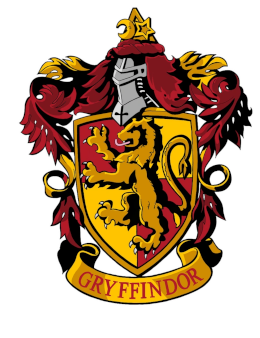
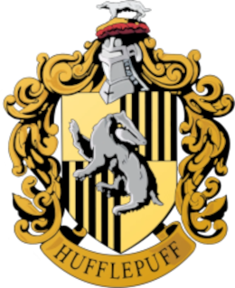
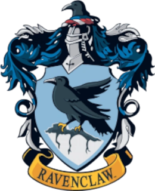
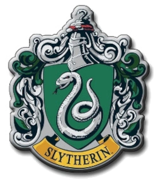

Informações retiradas de harrypotter.fandom.com.
Albus Dumbledore
Pode se encontrar a felicidade mesmo nas horas mais sombrias, se a pessoa se lembrar de acender a luz.

A Grifinória, fundada por Godrico Gryffindor, é uma das quatro casas da Escola de Magia e Bruxaria de Hogwarts. Ao estabelecê-la, Godrico instruiu o Chapéu Seletor a classificar estudantes que obtivessem características as quais ele mais valorizava, como a coragem, o cavalheirismo e a determinação. Suas cores são o escarlate e o ouro e seu animal emblemático é um leão. Sir Nicholas de Mimsy-Porpington, também conhecido como "Nick Quase Sem Cabeça" é o fantasma patrono da casa.

A Lufa-Lufa, fundada por Helga Hufflepuff, é uma das quatro casas da Escola de Magia e Bruxaria de Hogwarts, sendo conhecida como a mais inclusiva entre as outras três; valorizando o trabalho árduo, a dedicação, a paciência, a lealdade e o jogo limpo ao invés de uma aptidão particular de seus membros. Seu animal emblemático é um texugo e suas cores são o amarelo e o preto. A diretora da casa mais notável é a Mestra de Herbologia Pomona Sprout e seu fantasma patrono é o Frei Gorducho.

A Corvinal, fundada por Rowena Ravenclaw, é uma das quatro casas da Escola de Magia e Bruxaria de Hogwarts. Seus membros, comumente, são caracterizados por sua inteligência, aprendizado e sabedoria. Suas cores são o azul e bronze, o animal emblemático é uma águia e sua fantasma patrono é a Dama Cinzenta. A casa possui um diretor notável, o Mestre de Feitiços Fílio Flitwick.

A Sonserina, fundada por Salazar Slytherin, é uma das quatro casas da Escola de Magia e Bruxaria de Hogwarts. Ao estabelecer a casa, Salazar instruiu o Chapéu Seletor a escolher somente alunos que obtivessem algumas de suas características particulares as quais ele prezava. Entre elas incluem a astúcia, desenvoltura, liderança e ambição. Vários membros da Sonserina possuem uma certa tendência em formar grupos, muitas vezes adquirindo líderes, o que exemplifica ainda mais as qualidades ambiciosas de Slytherin.